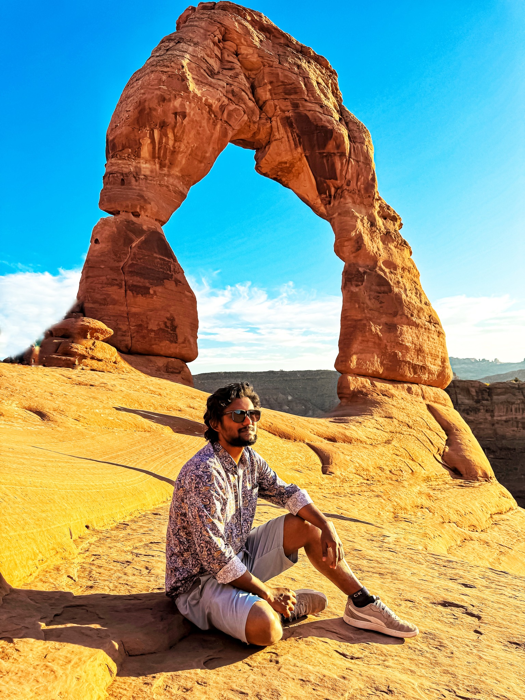
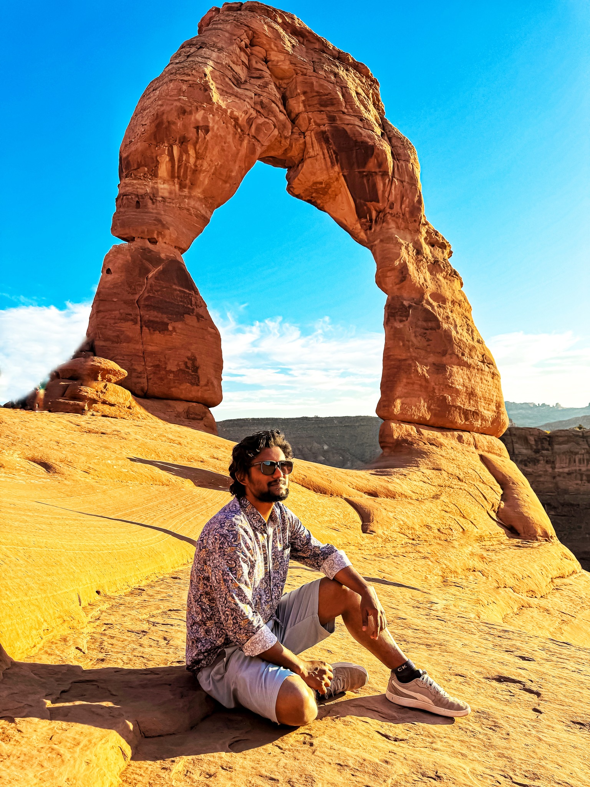
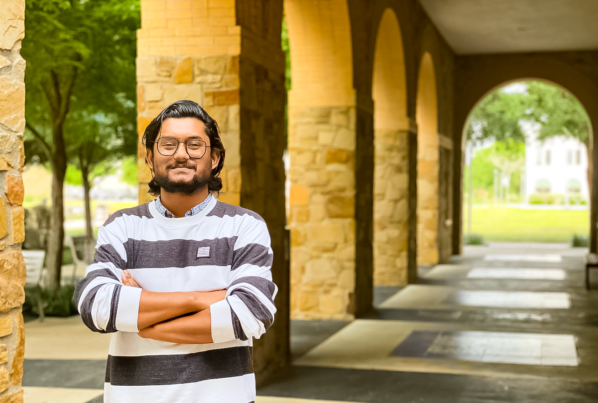
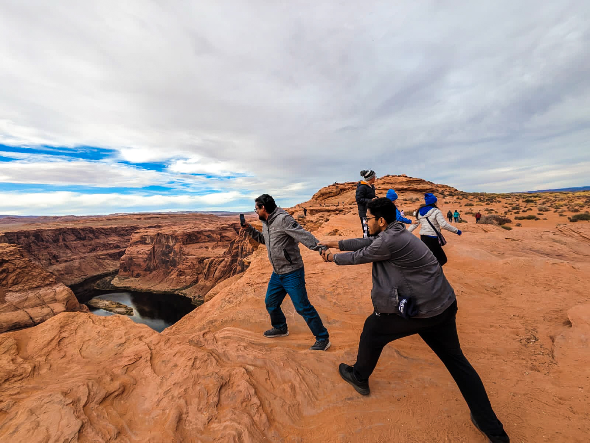
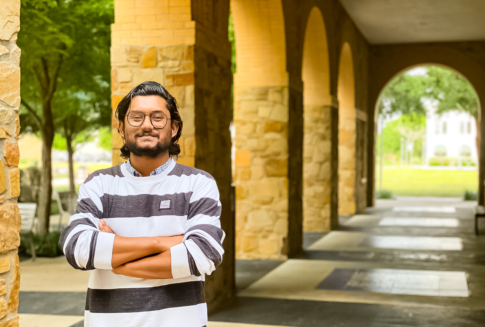
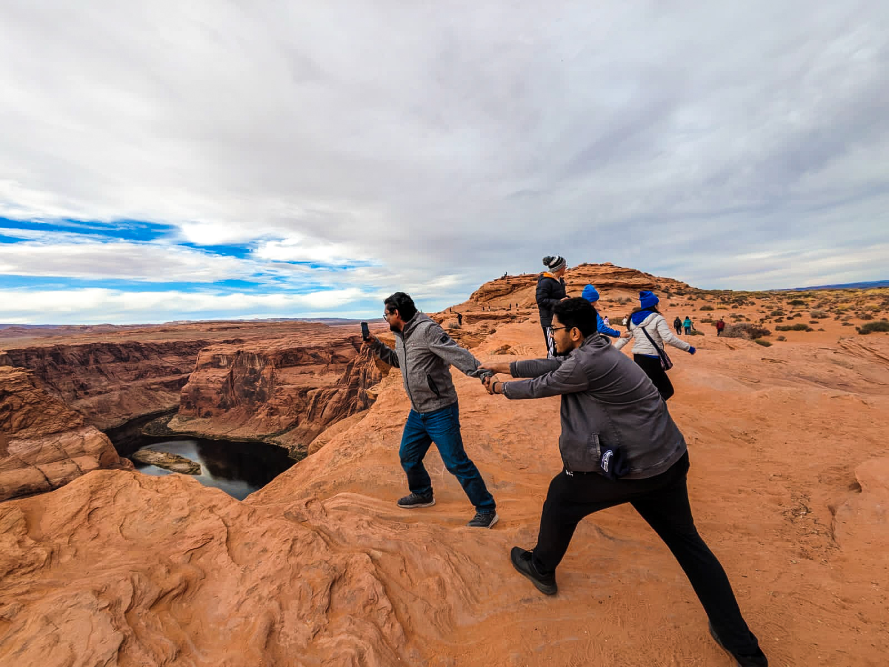
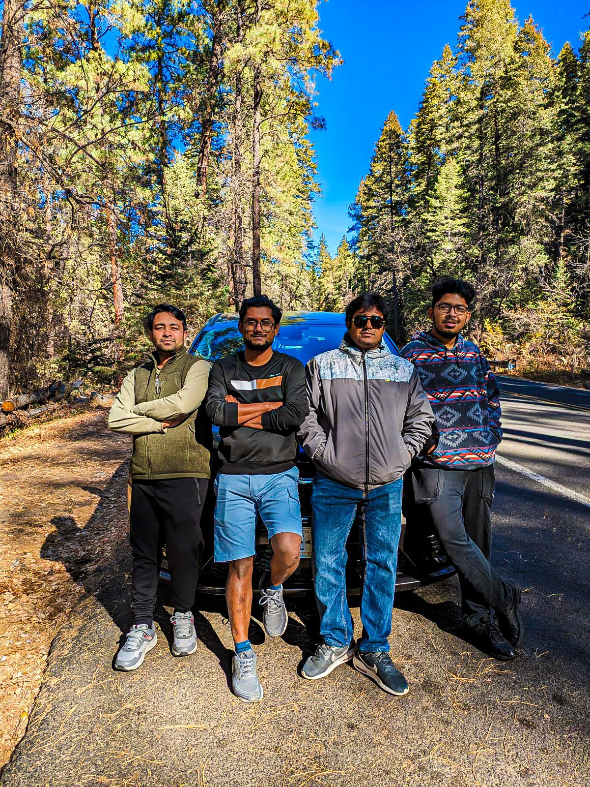
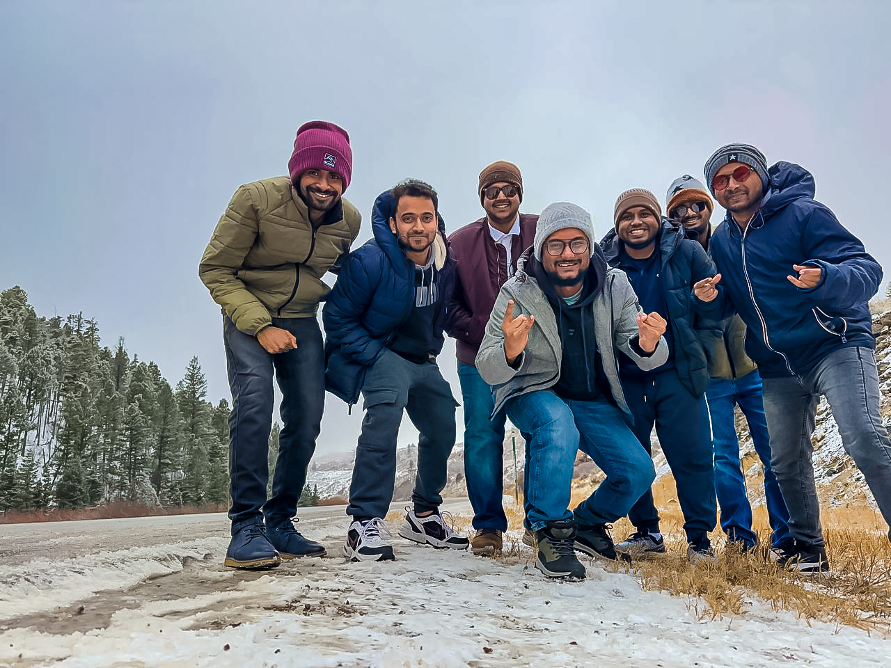
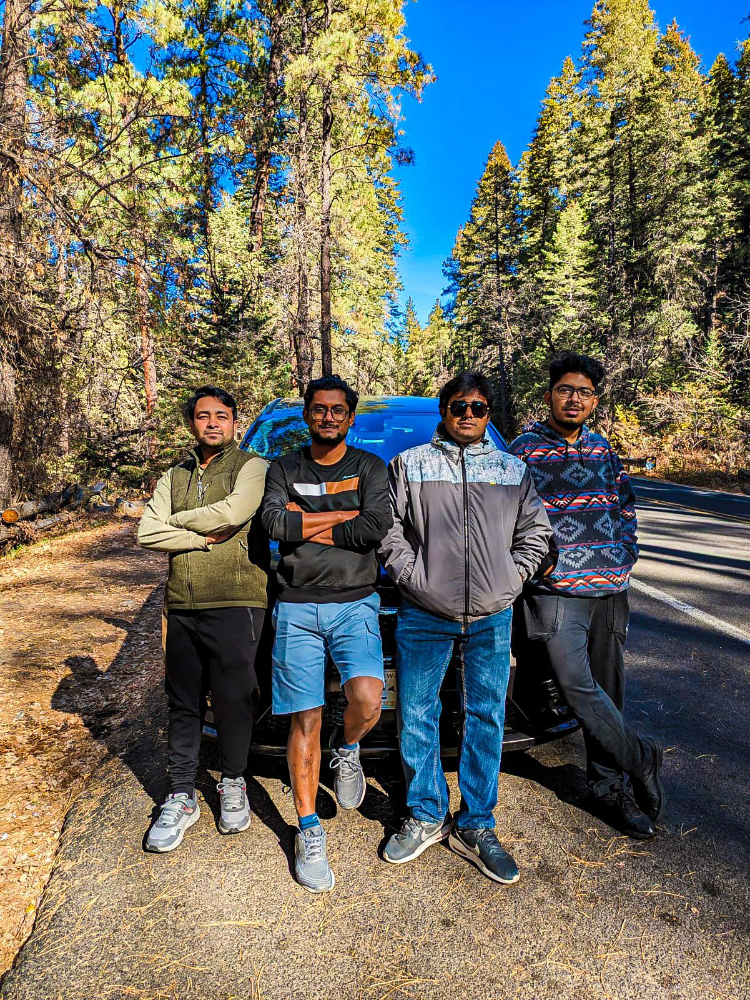
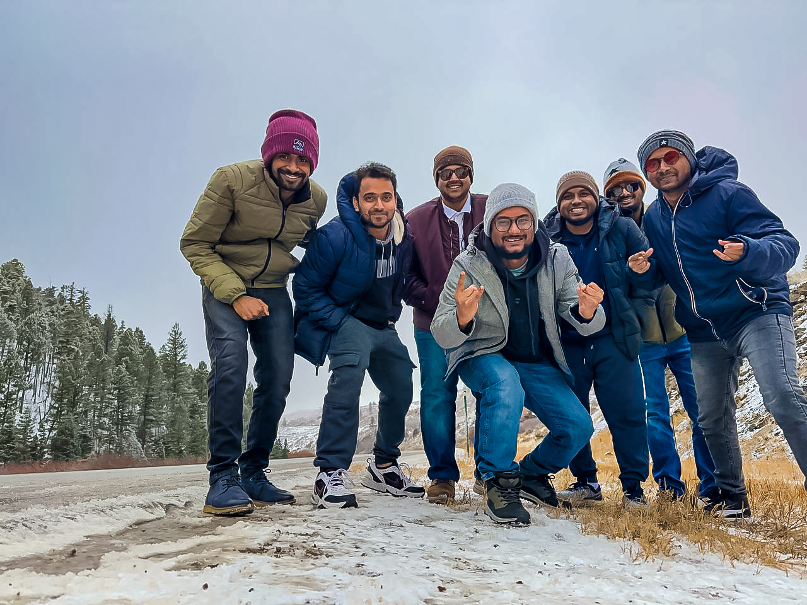

"In the era of big data, biology is not just an experimental science—it is a computational science."
From a young age, I was fascinated by the invisible world of microorganisms and their impact on human health. Growing up, I found myself deeply intrigued by how diseases spread, how infections take hold, and most importantly, how science and technology can be used to combat them. This curiosity led me to pursue a Bachelor’s degree in Computer Science and Engineering at Islamic University, Bangladesh. It was here that I discovered the power of computational techniques in biological research. My undergraduate project on COVID-19 and Mucormycosis co-infection ignited my passion for bioinformatics and computational biology, showing me the potential of integrating computer science with life sciences to solve critical health challenges.
Determined to bridge this gap between computation and biology, I embarked on a journey that took me beyond traditional programming and into the world of systems biology, molecular modeling, and data-driven biomedical research. After completing my B.Sc., I engaged in multiple research projects as a Research Assistant, focusing on disease biomarker identification, drug discovery, and computational genomics. During this time, I contributed to several high-impact scientific publications, further solidifying my dedication to this interdisciplinary field.
My desire to contribute meaningfully to biomedical science led me to Texas A&M University – San Antonio, USA, where I am currently pursuing a Master of Science (M.S.) in Life Sciences. Here, I am refining my expertise in computational biology, bioinformatics, and machine learning to address pressing challenges in antimicrobial resistance, molecular interactions, and genetic regulation. My research in Staphylococcus aureus drug resistance mechanisms and single-cell RNA sequencing for HIV analysis has been at the forefront of computational biology applications in infectious disease research.
In addition to my academic and research endeavors, I have also taken on roles as a Research Assistant and Graduate Teaching Assistant, mentoring undergraduate students in statistics, bioinformatics, and computational modeling. Through these experiences, I have developed strong analytical, problem-solving, and leadership skills, which I aim to use in advancing personalized medicine, computational drug discovery, and biomedical innovations.
As I continue on this journey, my long-term goal is to contribute to cutting-edge biomedical research, utilizing computational approaches to uncover novel therapeutic strategies and advance global health initiatives. From my early fascination with microorganisms to my present work in drug discovery and bioinformatics, my passion remains unwavering—to use science and technology to make a real difference in healthcare and human lives. 🚀

.jpg)
.jpg)
 

 




.JPG) 


